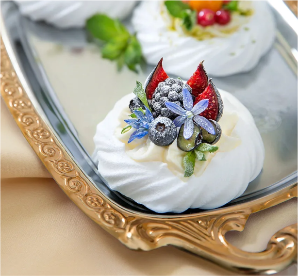

Мне очень понравился карамельный Faretti. Вкус нежный, сладкий с карамелью и сливками. Выглядит торт очень привлекательно и аппетитно. Приятен тот факт, что торт Faretti выглядит, как импортный продукт, а на самом деле - это российский продукт. Он вполне составляет конкуренцию импортным кондитерским товарам. Цена на торт вполне приемлема. Два маленьких тортика стоят всего 40 рублей. Если сравнивать торт Faretti с аналогичными кондитерскими пирожными и кексами, то перевес будет на стороне симпатичного бисквитного тортика. Я советую всем попробовать тортики Faretti для чаепития дома или порадовать в гостях приятным сюрпризом. Я часто хожу к подруге на чай с тортиками Faretti, что очень приятно всем!
Rozovya Pantera
Отзыв с iRecommend
КРАМБЛ!
Смородиновый , прямиком из холодильника, а если еще запить молоком, то вообще просто сказка
Смородиновый , прямиком из холодильника, а если еще запить молоком, то вообще просто сказка
Denis Shakryl
Отзыв с Инстаграм
Мне очень понравился карамельный Faretti. Вкус нежный, сладкий с карамелью и сливками. Выглядит торт очень привлекательно и аппетитно. Приятен тот факт, что торт Faretti выглядит, как импортный продукт, а на самом деле - это российский продукт. Он вполне составляет конкуренцию импортным кондитерским товарам. Цена на торт вполне приемлема. Два маленьких тортика стоят всего 40 рублей. Если сравнивать торт Faretti с аналогичными кондитерскими пирожными и кексами, то перевес будет на стороне симпатичного бисквитного тортика. Я советую всем попробовать тортики Faretti для чаепития дома или порадовать в гостях приятным сюрпризом. Я часто хожу к подруге на чай с тортиками Faretti, что очень приятно всем!
Anastasiya Loginova
Отзыв с Вконтакте
Мне очень понравился карамельный Faretti. Вкус нежный, сладкий с карамелью и сливками. Выглядит торт очень привлекательно и аппетитно. Приятен тот факт, что торт Faretti выглядит, как импортный продукт, а на самом деле - это российский продукт. Он вполне составляет конкуренцию импортным кондитерским товарам. Цена на торт вполне приемлема. Два маленьких тортика стоят всего 40 рублей. Если сравнивать торт Faretti с аналогичными кондитерскими пирожными и кексами, то перевес будет на стороне симпатичного бисквитного тортика. Я советую всем попробовать тортики Faretti для чаепития дома или порадовать в гостях приятным сюрпризом. Я часто хожу к подруге на чай с тортиками Faretti, что очень приятно всем!
Rozovya Pantera
Отзыв с Вконтакте
Мне очень понравился карамельный Faretti. Вкус нежный, сладкий с карамелью и сливками. Выглядит торт очень привлекательно и аппетитно. Приятен тот факт, что торт Faretti выглядит, как импортный продукт, а на самом деле - это российский продукт. Он вполне составляет конкуренцию импортным кондитерским товарам. Цена на торт вполне приемлема. Два маленьких тортика стоят всего 40 рублей. Если сравнивать торт Faretti с аналогичными кондитерскими пирожными и кексами, то перевес будет на стороне симпатичного бисквитного тортика. Я советую всем попробовать тортики Faretti для чаепития дома или порадовать в гостях приятным сюрпризом. Я часто хожу к подруге на чай с тортиками Faretti, что очень приятно всем!
Denis Shakryl
Отзыв с instagram.com